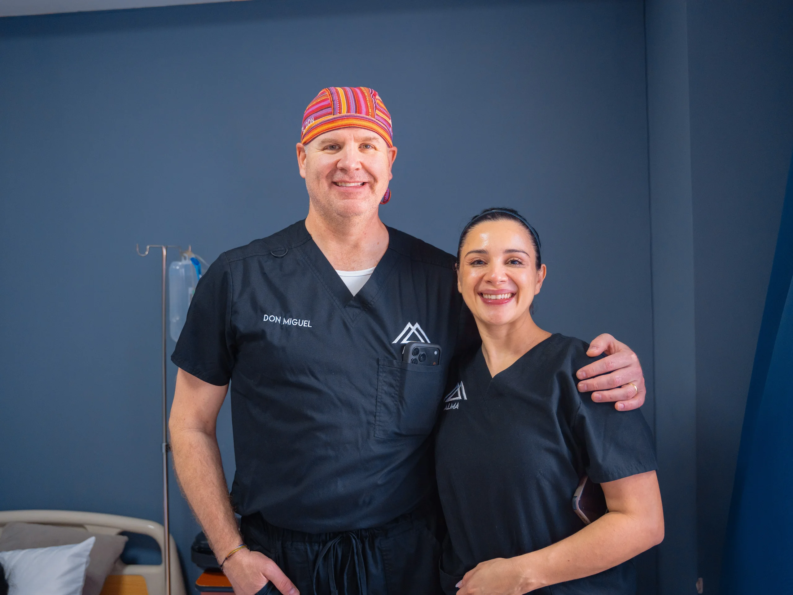

Los socios locales lideran
Operamos con cirujanos guatemaltecos en el Centro Médico Renacer y apoyamos al personal local todo el año, para que la atención continúe cuando regresamos a casa.

Nuestra historia
Fundada en 2018 · Coeur d'Alene, Idaho
Mike Oswald, CRNA, de Anesthesia Associates of Coeur d'Alene, viaja a Guatemala en misiones médicas desde 2007. Después de años de ver la necesidad, fundó ALMA para trabajar de la mano con médicos locales que atienden a comunidades indígenas.
Hoy ALMA realiza tres misiones quirúrgicas al año en Sololá, Quetzaltenango, Ciudad de Guatemala y Antigua. Entre misiones apoyamos una escuela de educación especial, un hogar de rehabilitación infantil y proyectos comunitarios para familias indígenas. Operamos con muy pocos gastos y sin personal pagado en EE. UU., así que cada donación rinde mucho.

En sus palabras
Te cambia la vida.
Mike OswaldRevista Kootenai Health, 2022 (traducido)
“Los pacientes quedan en listas de espera, pero la mitad de los centros de salud no tienen el personal, los medicamentos ni el instrumental que necesitan.”
Mike Oswald, CRNA, cofundador de ALMARevista Kootenai Health, 2022 (traducido)
“Uno regresa renovado.”
Dr. Tom deTar, otorrinolaringólogo, tres misiones con ALMARevista Kootenai Health, 2022 (traducido)
Nuestro camino

Mike Oswald, CRNA, de Anesthesia Associates of Coeur d'Alene, comienza a atender pacientes en Guatemala.
Mike Oswald funda ALMA para unir a voluntarios, incluido personal médico de Kootenai Health, con el equipo médico de una clínica en Xela.
En su primer viaje con ALMA, el Dr. Patrick Mullen opera a Evelinda, una niña de dos años y medio que nació con los dedos unidos en ambas manos.
Coeur d'Alene sale a bailar por Guatemala, y el evento se convierte en tradición anual.
Los donantes recaudan $36,243, muy por encima de la meta de $25,000.
Otorrinolaringología y cirugía general en abril; artroscopia, gastroenterología y ginecología en junio; y reemplazo articular en octubre.
Cómo trabajamos
Operamos con cirujanos guatemaltecos en el Centro Médico Renacer y apoyamos al personal local todo el año, para que la atención continúe cuando regresamos a casa.
Equipos quirúrgicos completos, anestesiólogos y enfermeras de recuperación viajan juntos, para que cada paciente reciba la atención que querríamos para nuestras propias familias.
Sin personal pagado en EE. UU. y con gastos mínimos, tu donación va casi por completo a la atención directa en Guatemala.


Sirve en un equipo quirúrgico, patrocina a un voluntario o dona para que un paciente más pueda caminar, ver o comer sin dolor.